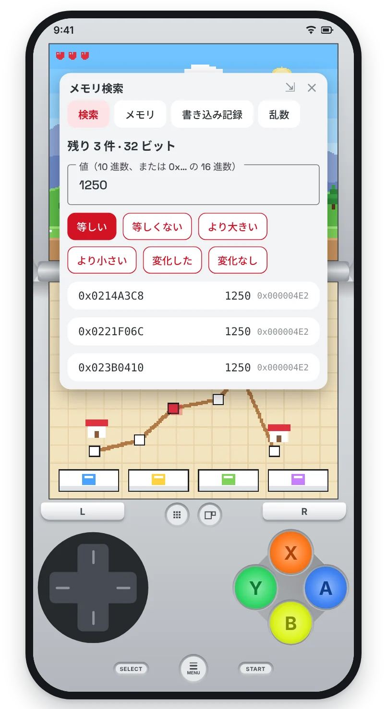

機能
CarloDS は、Android スマートフォンおよびタブレット向けの NDS エミュレーターです。ARM9・ARM7 プロセッサー、2D／3D グラフィックス、サウンド、無線通信、内蔵 BIOS を含むエミュレーションコアをすべて独自に開発し、実機での多数のテスト結果をもとにタイミングと描画を一つずつ調整することで、実機に忠実な動作を目指しています。ほとんどのゲームは BIOS ファイルなしで動作し、ZIP 形式にも対応しています。
独自開発の高精度コア
- 実機テストの結果を基準に、CPU タイミング、DMA、3D 描画、アンチエイリアス、クリッピングなどを個別に補正
- 2 種類のコアを搭載実機に最も近い「高精度コア」と、JIT により多くのゲームを大幅に高速化する「高速コア」
- BIOS を内蔵しているため、別途用意する必要はありません。ゲームフォルダーにお手持ちの BIOS／ファームウェアがある場合は自動的に使用します

ゲームライブラリ
- ゲームのアイコンとタイトルを自動で読み込み。サブフォルダーと ZIP ファイルに対応
- 検索、最近プレイしたゲーム、「続きから」機能を搭載
- ゲームごとにカバー画像を設定可能
- 初回起動時に端末の性能チェックを実施し、最適な設定を自動で提案

画面レイアウトと操作
- 縦画面、横画面の大小 2 画面、横並び、1 画面のレイアウトをワンタップで切り替え、主画面の入れ替えにも対応
- 下画面はタッチ操作に対応
- 画面の向きは自由に選択可能
- 画面上のボタンを非表示にしてコントローラーで操作可能
- ふたの開閉を再現（多くのゲームはふたを閉じるとスリープします）

画質とパフォーマンス
- ローエンド／ミドル／ハイエンドの 3 種類のプリセットを用意。性能チェック後は端末に合わせた推奨設定も利用可能
- 3D は最大 4 倍の解像度（自動設定可）、3D アンチエイリアス、テクスチャスムージング、2D スムーズ拡大に対応
- 描画方式Software、OpenGL ES、Vulkan
- フィルタースムーズ、LCD、スキャンライン、xBR、CAS シャープ化。明るさとコントラストも調整可能
- パフォーマンス設定16 ビット出力、3D マルチスレッド描画、ジオメトリ即時処理、自動フレームスキップ
- 画面・パフォーマンス・コントローラーの設定をゲームごとに保存可能
- 画面表示起動アニメーション、フレームレート、詳細なパフォーマンス情報

セーブとツール
- 複数のステートセーブスロット。ロード後の取り消しにも対応し、ゲームが中断された場合は自動で保存
- 早送り（最大 4 倍）、巻き戻し（1 回で 5／10／15 秒）、連射（速度調整可）
- ゲーム内ショートカット音量、クイックセーブ、スクリーンショット、ふた、チート、メモリ検索、巻き戻し（表示項目は選択可能）
- チートAction Replay コードに対応。usrcheat.dat、cheats.xml データベース、および .mch／.dct／.cht／テキスト形式のファイルを読み込み可能
- メモリ検索フローティングウィンドウで動作し、検索中もゲームは停止しません。メモリビューアーと書き込みログも搭載

ワイヤレス通信とダウンロードコンテンツ
- ローカルワイヤレス通信同じ Wi‑Fi に接続した端末同士で通信可能。ルーターがない場合はスマートフォンのテザリングを利用できます
- 終了したオンラインサービスの代替機能を内蔵し、本機がローカルネットワーク内の端末にサービスを提供（一部のゲームに対応）
- ダウンロードコンテンツ（試験的機能）ゲーム内のプレゼントや配信コンテンツを内蔵し、インターネット接続なしで受け取り可能

その他の機能
- RetroAchievements の実績に対応
- クラウドセーブGoogle Drive でセーブデータを同期
- コントローラーとキーボードに対応し、すべてのボタンを割り当て可能
- マイク入力息を吹きかける、話しかけるなどの操作に対応。録音はゲーム実行中のみ
- GBA スロット当社の GBA エミュレーター RetroGenY の GBA ゲームを挿入可能。振動カートリッジ（端末のバイブレーションを使用）にも対応
- 本体プロフィールニックネーム、誕生日、好きな色、メッセージ、言語
- 問題の報告動作ログをメールで開発者に送信可能